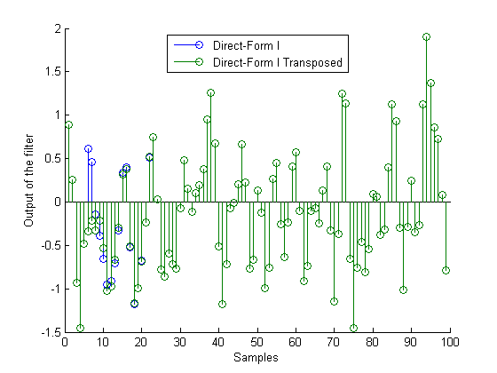
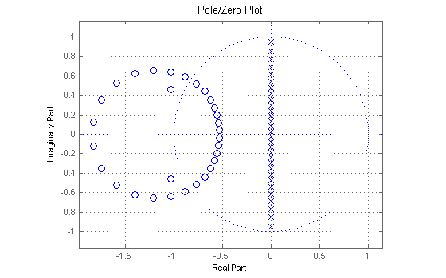
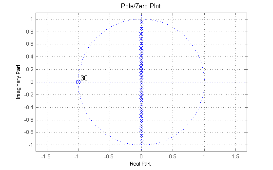
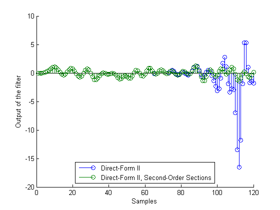
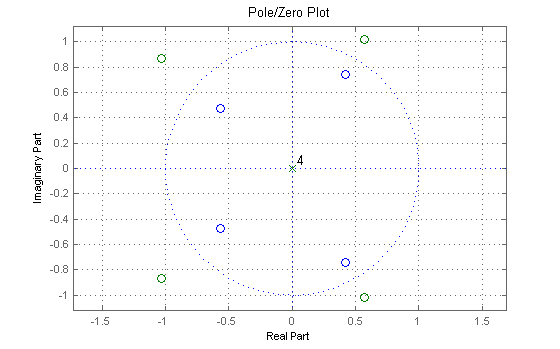

The filtering operation is implemented for different structures. This is far more flexible than the usual FILTER(b,a,x) function which always implements transposed direct-form II. Another benefit of filtering with objects comes from the fact that the states of the filter can be saved after each filtering operation. This demo discusses both features.
By default, the states of the filter, stored in the 'States' property, are each initialized to zero. Furthermore the 'ResetBeforeFiltering' property is 'on' which means that the object is reset before the filter is run. This allows to filter the same sequence twice and produce the same output.
[b,a] = butter(5,.5); % 5th-order IIR filter hdf1 = dfilt.df1(b,a); % Direct-form I implementation hdf1t = dfilt.df1t(b,a); % Transposed direct-form I implementation hdf2 = dfilt.df2(b,a); % Direct-form II implementation x = ones(5,1); y1 = filter(hdf1, x)
y1 =
0.0528
0.3167
0.8111
1.1718
1.1196
y2 = filter(hdf1, x)
y2 =
0.0528
0.3167
0.8111
1.1718
1.1196
The user can specify initial conditions by turning the 'ResetBeforeFiltering' property 'off' and setting the 'States' property. If a scalar is specified, it will be expanded to the correct number of states. If a vector is specified, its length must be equal to the number of states. For example:
x = randn(99,1); hdf1.ResetBeforeFiltering='off'; hdf1.States = 1; % Uses scalar expansion ydf1 = filter(hdf1,x); hdf1t.ResetBeforeFiltering='off'; hdf1t.States = 1; % Uses scalar expansion ydf1t = filter(hdf1t,x); stem([ydf1, ydf1t]); legend('Direct-Form I', 'Direct-Form I Transposed',0) xlabel('Samples'); ylabel('Output of the filter')
Notice how the two filtered sequences are different at the begining. This is due to the initial conditions. Since the filter structures are different, the effect of the initial conditions on the output is different. As the effect of the initial conditions dies out, the two sequences become the same.
Setting the 'ResetBeforeFiltering' property 'off' is a convenient feature for streaming data to the filter. Breaking up a signal and filtering in a loop is equivalent to filtering the entire signal at once:
close hdf1.States=1; % xsec = reshape(x(:),33,3); % Breaking the signal in 3 sections ydf1loop = zeros(size(xsec)); % Pre-allocate memory for i=1:3, ydf1loop(:,i)=filter(hdf1,xsec(:,i)); end
We verify that ydf1loop(signal filtered by sections) is equal to ydf1 (entire signal filtered at once).
max(abs(ydf1loop(:)-ydf1))
ans =
0
If the input signal x is a matrix, each column of x is seen by the filter as an independent channel.
x=randn(10,3); % 3-channels signal
y=filter(hdf2,x)
y =
-0.0589 0.0653 -0.0372
-0.2611 0.2930 -0.2396
-0.4160 0.3220 -0.6266
-0.2181 -0.5448 -0.7252
0.0775 -1.7112 -0.0211
-0.0508 -1.3774 0.9282
-0.5238 0.3162 1.0163
-0.9322 1.1025 0.2885
-1.0522 0.3863 -0.3313
-0.6554 -0.4908 -0.4517
states=hdf2.States
states =
-0.0185 -1.1171 0.6283
1.3539 -1.4491 -0.3901
-0.4737 0.7063 -0.0576
-1.3108 -1.3198 -0.6055
-0.0437 0.4488 -0.0878
Notice that the object stores the final conditions of the filter for each channel, each column of the 'States' property corresponding to one channel.
From a numerical accuracy standpoint, it is usually preferable to work with IIR filters in second-order sections (SOS) form and avoid forming the transfer function. DFILT objects provide fine-tuned analysis algorithms for SOS filters that avoid the numerical problems associated with transfer functions.
[z,p,k] = butter(30,0.5); [sos,g] = zp2sos(z,p,k);
First we will illustrate the problem of working with transfer functions for analysis purposes
[b,a] = sos2tf(sos,g); hfvt = fvtool(dfilt.df1(b,a), 'Analysis', 'polezero'); % All zeros are supposed to be at z = -1 set(hfvt, 'Color', [1 1 1])
Now we compare to using SOS DFILT objects. We use df1sos in this example but df1tsos, df2sos and df2tsos are also available.
hsos = dfilt.df1sos(sos,g); set(hfvt, 'Filter', hsos); % All zeros are where they should be
In addition to improved analysis, filtering should also be performed using second-order sections. In the example below we compare filtering using the transfer function with filtering using SOS. The transfer function filter is actually unstable. You can see this in the plot by looking at the output of this filter (in blue). The output begins to grow without bound, a symptom of instability. In contrast, the output of the SOS filter (in green) remains bounded.
[b,a] = ellip(30,.1,60,.4); % Design in transfer function form [z,p,k] = ellip(30,.1,60,.4); % Design in zero-pole-gain form [sos,g]=zp2sos(z,p,k); % Create SOS matrix from poles, zeros and gain hdf2 = dfilt.df2(b,a); % Direct-form II implementation of filter hdf2sos = dfilt.df2sos(sos,g);% SOS direct-form II implementation x = randn(120,1); ydf2 = filter(hdf2,x); % Filter a random signal using direct-form II ydf2sos = filter(hdf2sos,x); % Filter the same signal using SOS stem([ydf2, ydf2sos]) % Result should be the same, but it isn't set(gcf, 'Color', [1 1 1]) legend('Direct-Form II', 'Direct-Form II, Second-Order Sections',0) xlabel('Samples'); ylabel('Output of the filter')
In addition to direct-form filters and corresponding SOS filters, DFILT objects can simulate other filter structures.
FIR lattice structures usually arise in the context of linear prediction. If the lattice coefficients (also called reflection coefficients) are all less than one in magnitude, we can implement either a minimum-phase or a maximum-phase FIR filter.
close k = [.1;.2;.3;.4]; hmin = dfilt.latticemamin(k); % Minimum-phase FIR filter hmax = dfilt.latticemamax(k); % Maximum-phase FIR filter set(hfvt, 'Filter', [hmin, hmax]);
Other filter structures available are allpass and ARMA lattices and state-space structures.
hallpass = dfilt.latticeallpass(k); % Allpass lattice filter v = 1:5; harma = dfilt.latticearma(k,v); % ARMA lattice filter [A,B,C,D] = ss(harma); % State-space model of ARMA lattice hss = dfilt.statespace(A,B,C,D); % State-space filter
See also dfiltdemo.m